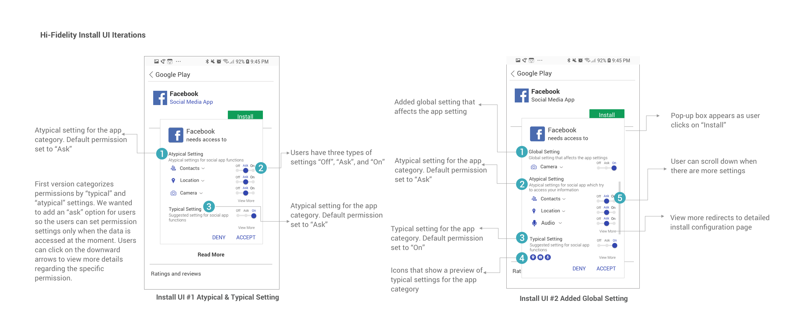
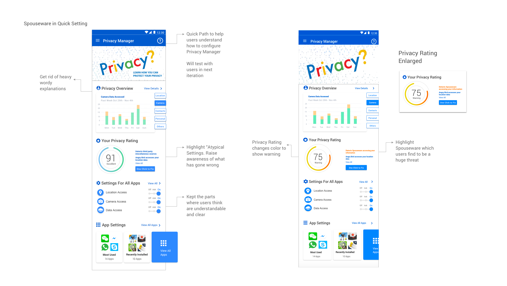
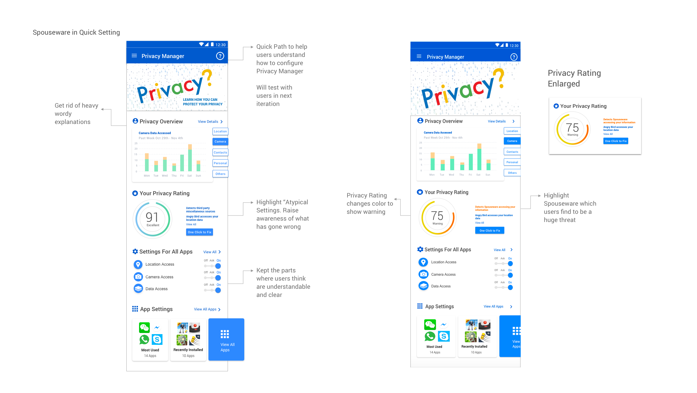

Blur is a new social app that redefines how you chat, meet and date by showcasing your personalities, interests and lifestyle before anything else.
Blur is a new social app that redefines how you chat, meet and date by showcasing your personalities, interests and lifestyle before anything else. ers and end-users to make privacy in the context of sensor-based smartphone apps
Spring 2017 Design - Startup
In Collaboration with Siqi Wang, Asit Parida (Engineering), and Mike Czapik (Engineering)
Professor: Jason Hong
My Role: User Experience Design, Animation Design, User Testing, Prototyping
Keywords: Social App, Mobile
Regardless of how busy we are with work, school, or life, we might feel lonely sometime at some point and we just need someone to talk to. With today’s social or dating applications which take milliseconds to swipe and find matches, it has become easy to find quick matches, but . People come with strong intention or purpose, and it is hard to find someone who matches with your thoughts and who you can truly talk to.
People often say “the dating apps have killed romance”. It takes milliseconds to swipe right. You don’t have much time to think through before you make a decision.
Blur is a new social platform to find, chat and connect by showcasing your personality and interests before anything else. Finding a match is as fun as playing a game on Blur - the photos of your potential matches are initially blurred, as you answer short and fun quiz questions, they become clear
It’s personality first By answering simple & fun questions, you’ll meet interesting people and not make snap judgements based on a single profile photo.
Privacy is vital Profile photos are blurred and only revealed to people that share the same value and interests.
Make better matches Backed by advanced machine learning algorithms, Blur builds a comprehensive profile that makes better recommendations that fit you.
As users enjoy answering fun questions to de-blur their matches, Blur is simultaneously building comprehensive profiles for them, so the more they play the better matches become.
As the only designer on the startup team, I took a lot of responsibilities for all visual aspects. As past paced as a startup can be, I was in charge of wireframing, prototyping, user testing on each prototype at different stages, working with engineers to meet app updates, and assisting with any design-related visual needs for other purposes.

For user testing, I tried to recruit people outside of my network to receive more critical and unbiased feedback.
To begin, I organized my digital prototypes into Invision to create a mobile mockup. I recruited one person from CMU library, one from Starbucks coffee shop, and two people walking on the street. I received a variety of comments during Think Aloud process, but I was able to find repetitive patterns from those information. One common feedback I received from testings was Wow. That's a lot of information!"
Users don't know what is the "best" configuration setting for them. They don't know how to configure. Some of the terms don't relate to them right away. They need more explanations to help them to understand.
Here comes the problem : how to make the user interface simple but also informational so we can help users configure the safe setting in a more knowledgeable way?
For user testing, I tried to recruit people outside of my network to receive more critical and unbiased feedback.
To begin, I organized my digital prototypes into Invision to create a mobile mockup. I recruited one person from CMU library, one from Starbucks coffee shop, and two people walking on the street. I received a variety of comments during Think Aloud process, but I was able to find repetitive patterns from those information. One common feedback I received from testings was Wow. That's a lot of information!"
Users don't understand why they need to configure and what they can configure without interfering basic functionalities of the appUsers don't know what is the "best" configuration setting for them. They don't know how to configure. Some of the terms don't relate to them right away. They need more explanations to help them to understand.
Here comes the problem : how to make the user interface simple but also informational so we can help users configure the safe setting in a more knowledgeable way?
Instead of directing users to another page, I designed pop-up box on the same page, so users will have a less obtrusive transition. I broke down the problems into categories by listing out the Atypical Settings on the top, and collapsed Typical Settings for this app categorization.

First version categorizes permissions by “typical” and “atypical” settings. We wanted to add an “ask” option for users so the users can set permission settings only when the data is accessed at the moment. Users can click on the downward arrows to view more details regarding the specific permission.
In order to help users make safer choices with their settings, we set the typical settings for the app category to be "on" and atypical settings to be "ask". Users can easily expand each setting category to see more details such as who is accessing the data, what data type is accessed, and why the data is requested.
In the next iteration, I will design how Global Policy (settings for all apps)affects users on install interface. There might be conflicting cases when a user sets location for Global Policy to be on, but the location policy for the specific app is "atypical". We need to inform users this specific case so they don't have conflicting mental models. In our previous version, I think the design is still a lot of text to read. I will do another round of user testing and work on simplying install UI. Furthermore, I will test on adding a recommended permission choice into the UI and iterate from the feedback.
From Install Interface to Privacy Policy Home Page
After users interact with Privacy Manager in the Install UI, We also want to allow users to come to Privacy Manager Home Screen to gain more knowledge about their privacy standing. They will have access for more detailed configurations at Privacy Manager Home Page.
We examined the previous design for Privacy Poliy Home Page, and found the following problems that we could fix through Heuristic Evaluation:
We then did user testing on the prototype. After user testing, I received the following results:
 What Users Think
What Users Think
 

After user testing, I removed all the explanations for each section on the home screen to make the interface look clean. The titles should be explanatory enough for users to understand. Users can click in "view details" to get more information on each section. The "Atypical Permissions" will be highlighted at the Privacy Rating section. I also designed another version of interface when a user has malsoftware such as spouseware installed on the computer. User will visually notice on the home screen by both color and privacy score change.
For future iterations, I will work on on-boarding screens to walk users through Privacy Manager home screen and introduce functionalities for each section. I will also design detailed pages inside each section. Additionally, I will think more about content in the collapsed hamburger menu.

We also thought that it would be helpful for users to have quick access to turn ALL the permissions for a specific category "On" or "Off". We did two iterations on the "Quick Settings" menu. The first one is to have "Quick Settings" collapse under the top navigation notification section. The second one will be closer to Android design which includes Quick Setting in one of the quick menus. We will do A/B Testing and Think Aloud Testing on these two iterations.
Our project is still work in progress. I am always happy to chat more about my progress and updates :)!